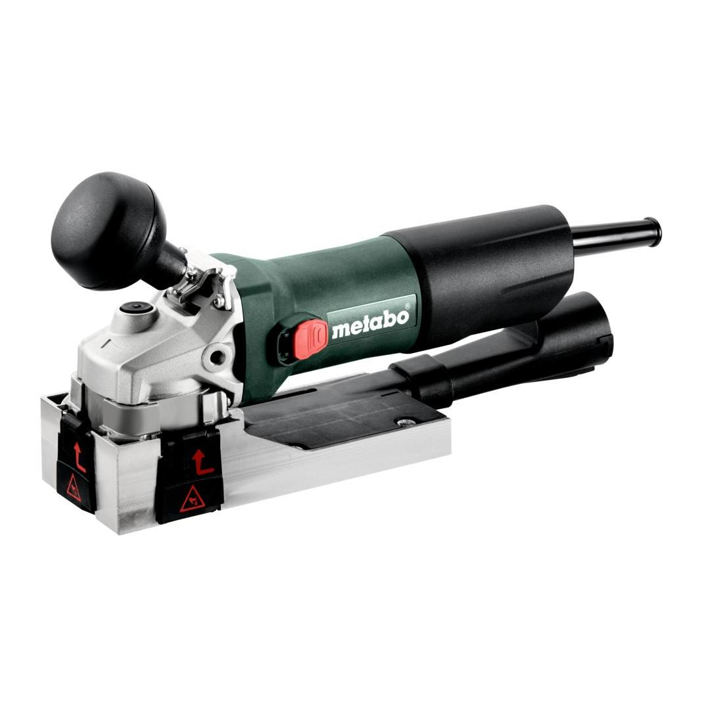
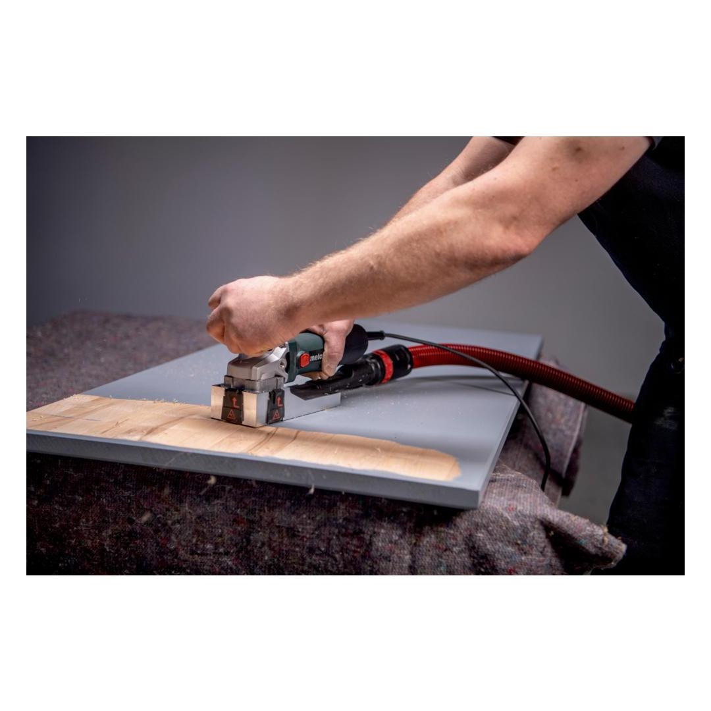
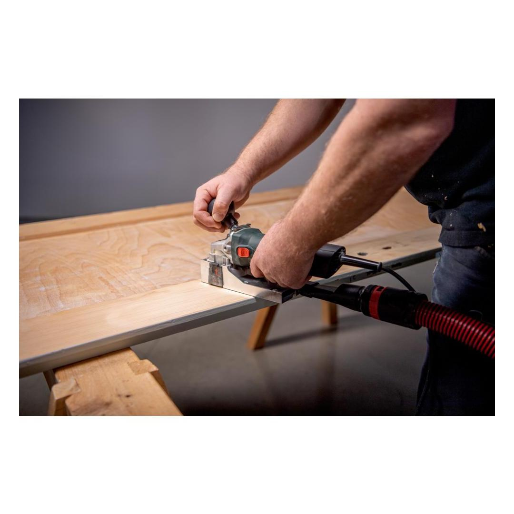
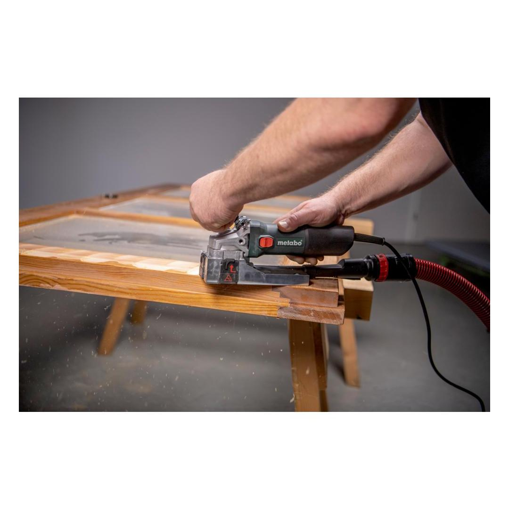
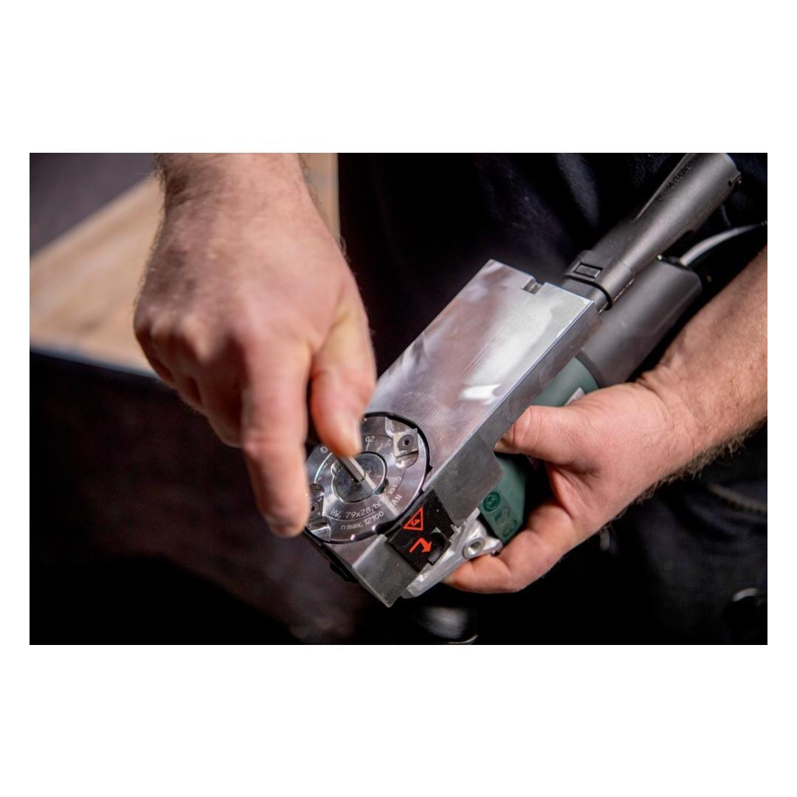
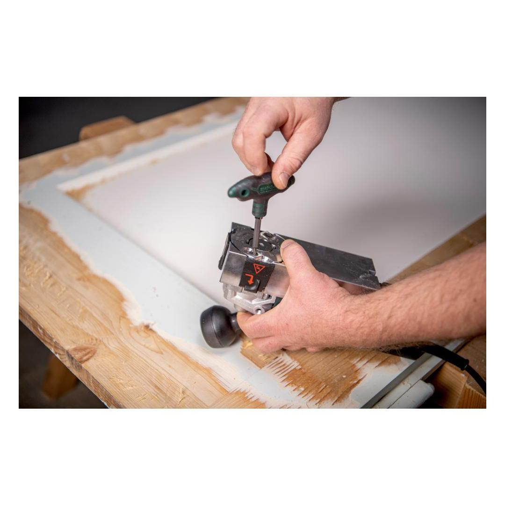
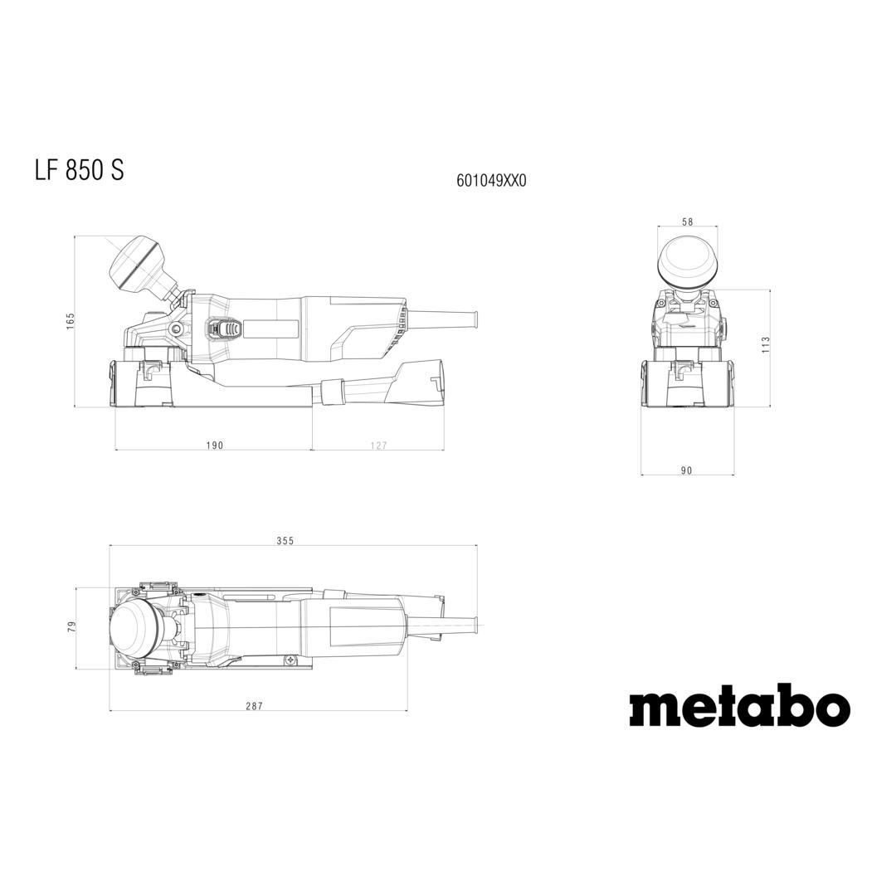

601049500







| Torque | 2 Nm / 18 in-lbs |
| Cutting edge cycle | 80 mm / 3 1/8 " |
| Axial routing depth | 0 - 0.3 mm // 0 - 0.012 " |
| Rated input power | 850 W |
| No-load speed | 11500 rpm |
| Torque | 2 Nm / 18 in-lbs |
| Cutting edge cycle | 80 mm / 3 1/8 " |
| Maximum notch depth | unlimited |
| Lateral milling height | 28 mm / 1 1/8 " |
| Axial routing depth | 0 - 0.3 mm // 0 - 0.012 " |
| Radial routing depth | 0.15 mm / 0.006 " |
| Rated input power | 850 W |
| Output power | 470 W |
| No-load speed | 11500 rpm |
| Speed at rated load | 7500 rpm |
| Weight (without power cable) | 2.5 kg / 5.5 lbs |
| Cable length | 4 m / 13.12 ft |
| Planing soft wood | 4.4 m/s² |
| Uncertainty of measurement K | 1.5 m/s² |
| Sound pressure level | 97 dB(A) |
| Sound power level (LwA) | 105 dB(A) |
| Uncertainty of measurement K | 5 dB(A) |
| 4 Carbide reversible blades |
| Extraction connector |
| Adjusting wrench with handle |
| Combo-spanner |
| metaBOX 145 |